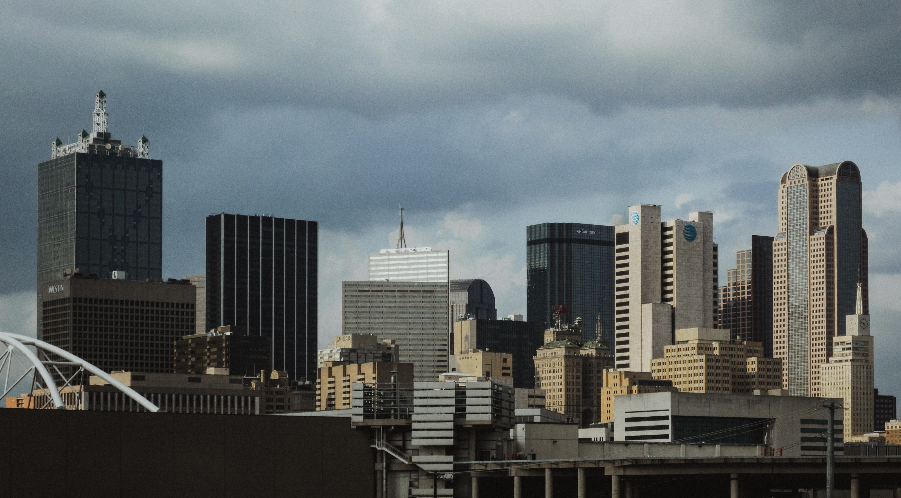
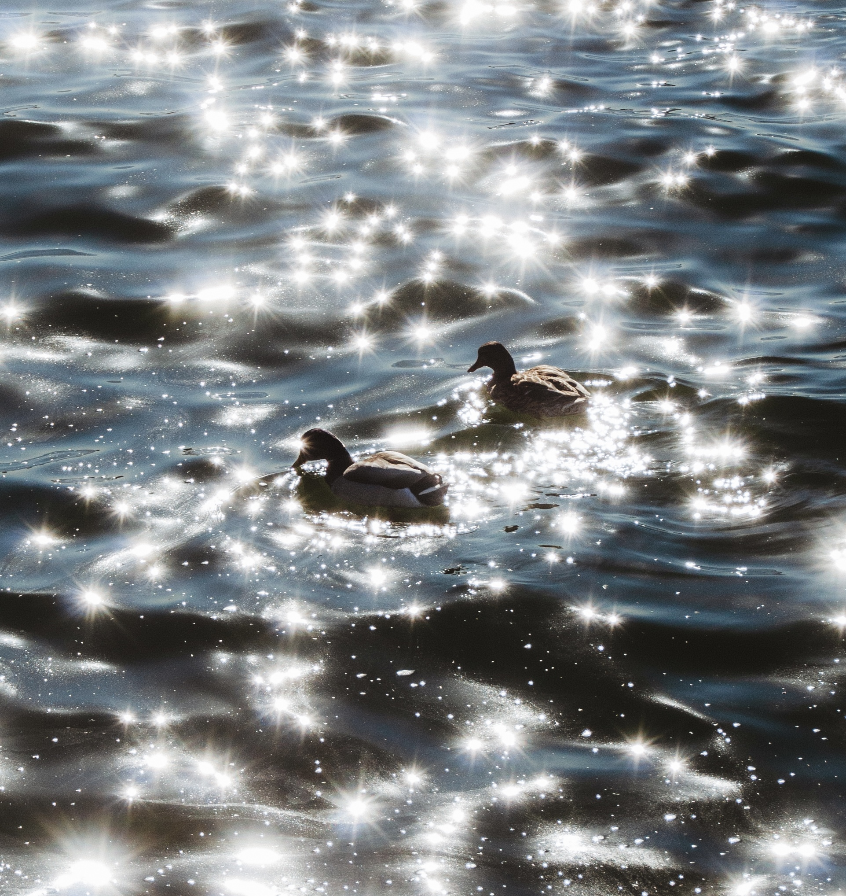

Background & Likes
My name is Angel Jaime, I’m 20 years old, I was born in Guanajuato, Mexico, and I’m studying to be a Software Developer in the future. Throughout my life I have lived in many places. For the first few years of my life I lived in Mexico and it was until my 5th birthday that I came to live in the U.S, more specifically, to Houston. After that I moved to Florida, and in 2018 I moved to Dallas, which is where l now live.
For the last 5 years I have also been a freelance photographer. I like EDM music and would also like to make a song of my own sometime. I’m also into videogames, although for the last few months I haven't had much time to play anything. Recently, I also got into watching movies, though I still can’t pick a favorite. Lastly, I'm also into tech, Marvel movies, and I also love to collect Lego Marvel Minifigures
Photography
I started my photography journey in 2018, but despite that, I still haven’t found the genre I want to commit to. Sometimes I do portraits, other times I do landscapes, street photography, toy photography, or any other type I feel like doing. Because of this, I have learned to be versatile and adapt to what needs to be photographed.
Since I come from a small town, many people consider me one of the best photographers in town and I take that with great pride, so I always do my best so my photos can reflect that. Here are some examples of my work:
 Music
Music is a great way to learn about someone, and for me, it is an integral part of my life. For almost a decade, my favorite artist has been Hardwell, a Dutch DJ who mainly plays EDM, and a few months ago I finally got the chance to meet him, which was definitely the best moment in my life.
Other artists who had a big impact on me were Avicii and Daft Punk, whose music I truly recommend to anyone. While I do listen to a variety of genres, EDM is the one that represents me the most, and here is a short list of songs that I love:
- Strobe - Deadmau5
- We’ll be Coming Back - Calvin Harris
- Face to Face - Daft Punk
- Papercut - Zedd
- Flatline - Hardwell